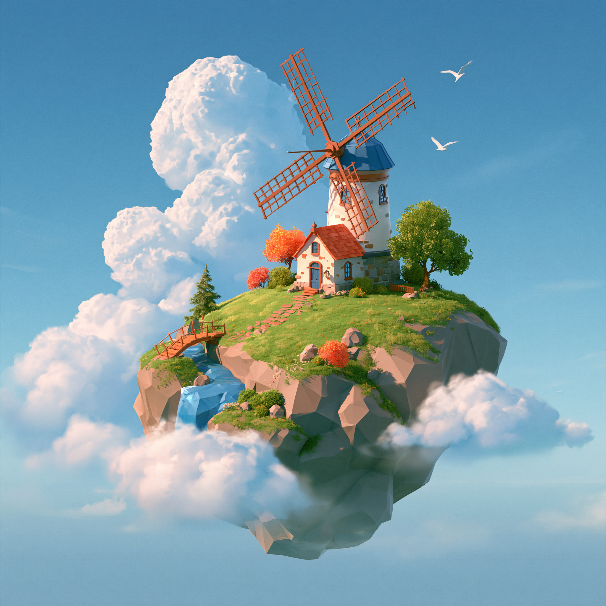

Pedro Jesús Muñoz Cifuentes
Levantando la isla…
Software Engineer
Backend · Java · Spring Boot
Explora la isla: cada rincón guarda una parte de mi historia.

Pedro Jesús Muñoz Cifuentes — Software Engineer. Activa JavaScript para explorar la isla.